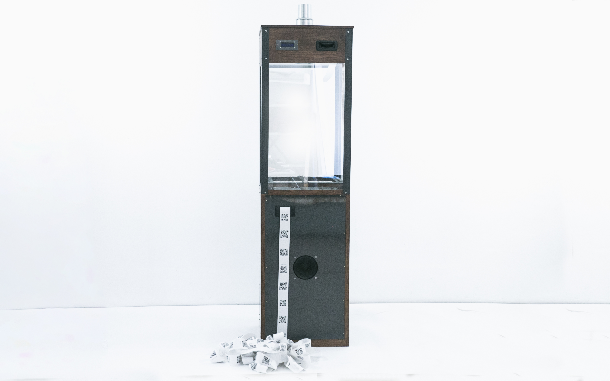
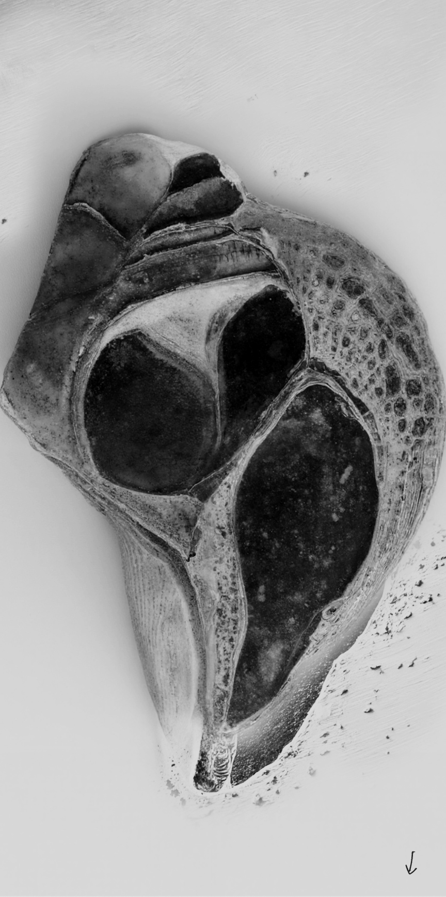

Alexandre Rouxel
Directeur artistique, enseignant, concepteur et développeur de protocoles blockchain & IA. Je forme les entreprises, écoles et institutions à l'intelligence artificielle et aux technologies décentralisées.
Parcours
Depuis 2017, je dirige la Distributed Gallery, un collectif pionnier à l'intersection de l'art contemporain et des technologies numériques. Nos œuvres ont été exposées à Art Basel, au Schinkel Pavillon de Berlin, à la FIAC, vendues chez Drouot et Phillips London, et acquises par des institutions comme le ZKM (Karlsruhe), le Francisco Carolinum (Linz) ou le Centre Pompidou.
J'ai également contribué au développement de protocoles dans l'écosystème Web3 — notamment Aragon Fundraising, un système de bonding curve utilisé par Aavegotchi pour lever 18,5 millions de dollars, et Spectre, un protocole de fractionnalisation d'œuvres numériques soutenu par Balancer Labs.
En parallèle, j'enseigne depuis dix ans dans l'enseignement supérieur — philosophie de la technique, humanités numériques, théories critiques — et aujourd'hui l'intelligence artificielle, en Master 1 et 2 à l'Institut Catholique de Paris.
En 2026, j'ai développé Foukenstein, un prototype de synthèse vocale entraîné sur la voix du philosophe français Michel Foucault. Ce projet combine modèle de langage, recherche augmentée sur corpus (RAG), prompt engineering avancé, synthèse vocale fine-tunée, interface web et déploiement cloud. Il illustre mon approche de la formation : partir de cas concrets, techniquement exigeants, pour comprendre comment fonctionnent réellement les technologies d'IA — et comment les utiliser de manière stratégique, créative et critique.
À l'intersection de ces pratiques, je propose désormais des formations en IA et en blockchain aux entreprises, écoles et institutions qui veulent comprendre et utiliser ces technologies sans en subir le storytelling.


Presse
Formations
Formations conçues sur mesure. Plusieurs formats pour répondre à des besoins différents : acculturer une équipe en deux heures, faire monter un groupe en autonomie sur une journée, ou aller plus loin sur deux jours.
Si on pouvait regarder à l'intérieur d'un modèle de langage, on ne verrait que des nombres qui s'entrechoquent.
Une conférence pour comprendre ce que sont réellement les grands modèles de langage, comment ils fonctionnent, ce qu'ils permettent — et ce qu'ils ne comprennent pas. L'intervention propose un grand tour d'horizon de l'IA générative contemporaine : RAG, agents, MCP, automatisations, API, fine-tuning, alignement, modèles open source, recherche augmentée et multimodalité. L'objectif est de comprendre ce que recouvrent aujourd'hui les technologies d'IA générative, comment en tirer le meilleur parti, et comment poursuivre ensuite ses propres recherches avec des repères solides — sans perdre de vue leurs limites techniques, économiques et politiques.
Tokenisation : découpage d'une phrase en tokens, les unités traitées par le modèle.
Cet atelier s'adresse à celles et ceux qui veulent aller au-delà d'un usage ponctuel des outils d'IA générative. Il propose, sur une journée, de découvrir les méthodes, les usages avancés et les bons réflexes qui permettent de travailler avec l'IA générative de manière plus précise, plus critique et plus efficace — que ce soit pour chercher, écrire, analyser, produire ou transformer des contenus.
L'atelier s'appuie sur une approche concrète des modèles de langage : comment construire un bon contexte, orienter un modèle sans le rigidifier, travailler avec des documents, stabiliser un ton, une méthode ou un rôle, repérer les réponses inventées, et transformer une interaction vague en production exploitable. À partir de cas pratiques — assistants spécialisés, analyse de corpus, écriture augmentée, recherche documentaire, préparation de contenus — les participants apprennent à concevoir des usages situés de l'IA, plutôt qu'à simplement accumuler des "prompts".
Au-delà de la prise en main, l'atelier propose une compréhension architecturale des grands modèles de langage : leur fonctionnement, leurs limites, leurs conditions d'usage et les manières de les intégrer dans des pratiques concrètes. Il accompagne les participants dans l'analyse et la maîtrise des outils, des méthodes et des bonnes pratiques nécessaires pour utiliser l'IA générative avec efficacité, discernement et autonomie.
Illustration du processus d'apprentissage par rétropropagation dans un réseau de neurones
Pour les organisations qui veulent passer d'usages ponctuels de l'IA à la conception d'outils adaptés à leurs pratiques. Cet atelier accompagne les équipes dans la définition d'un besoin, le choix des bonnes briques techniques, la conception d'une architecture simple et le prototypage d'un premier outil ou scénario d'usage.
Au programme, selon le niveau du groupe : assistants spécialisés, travail sur documents internes, recherche augmentée, intégration d'API, automatisations de workflows, principes du RAG, conception d'interfaces, logique d'agents, limites du fine-tuning et prototypage de premières briques fonctionnelles. Chaque module articule compréhension théorique, démonstration et mise en pratique sur des cas concrets.
L'objectif : repartir avec une architecture claire, un prototype ou scénario de prototype, et une compréhension solide des choix techniques à faire — sans dépendre entièrement du discours des prestataires ou des plateformes.
Le modèle mesure la ressemblance entre deux mots par l'angle entre leurs vecteurs.
Une journée pour comprendre ce que recouvrent réellement les technologies blockchain : smart contracts, wallets, DAOs, NFTs, tokenisation, finance décentralisée, gouvernance on-chain et infrastructures Web3. L'objectif est de sortir à la fois du jargon technique et des discours caricaturaux, pour comprendre ce que ces technologies permettent, ce qu'elles déplacent, et dans quel cas leur usage a réellement du sens.
Le contenu de la formation peut être adapté selon les besoins du groupe : découverte générale de la blockchain, compréhension des smart contracts, usages artistiques et culturels des NFTs, fonctionnement de la DeFi, gouvernance des DAOs, logiques de tokenisation, ou analyse critique des imaginaires Web3. Selon le niveau des participants, la journée peut prendre la forme d'une introduction structurée, d'un atelier d'acculturation, ou d'un approfondissement orienté vers des cas d'usage précis.
Cette formation est proposée par quelqu'un qui pratique ces technologies depuis 2017, et non par quelqu'un qui les observe de loin. J'ai exposé avec l'Ethereum Foundation et travaillé avec des acteurs majeurs comme Aragon ou Balancer. L'approche mêle donc compréhension technique, expérience de terrain et lecture critique des imaginaires Web3.
Illustration d'une blockchain : une chaîne de blocs contenant des transactions, reliés entre eux
Pour les structures qui ont des besoins spécifiques — formation interne récurrente, accompagnement plus long, intervention en école ou en institution — je conçois des programmes adaptés.
Me contacterEnseignement
J'interviens dans l'enseignement supérieur sur les usages critiques de l'IA, la théorie critique du numérique et la philosophie de la technique.
Ce cours propose une introduction critique aux intelligences artificielles génératives, envisagées comme dispositifs techniques, médiatiques, économiques et symboliques. Il accompagne les étudiants dans la compréhension des modèles, de leurs fonctionnements, de leurs biais et de leurs limites. Il examine également leurs usages ordinaires, leurs infrastructures et les reconfigurations de l'industrie du web qu'elles accompagnent ou accélèrent, notamment dans les domaines de l'écriture, des savoirs, du travail et de la création. Une attention particulière est portée aux enjeux industriels et politiques de l'IA, ainsi qu'aux formes de délégation, d'automatisation et de subjectivation qu'elle engage.
Ce cours propose une introduction aux rapports entre techniques, communication et organisation sociale. Il aborde la technique non comme un simple ensemble d'outils, mais comme un milieu qui transforme les formes de vie, les modes de perception, les pratiques collectives et les imaginaires politiques. À partir de textes issus de l'anthropologie, de la philosophie et de la sociologie des techniques, le cours interroge successivement la technicité humaine, l'industrialisation des rapports sociaux, puis les dispositifs numériques de communication.
Ce cours propose une introduction aux approches contemporaines des réseaux sociaux numériques. Il examine leurs dimensions socioculturelles, communicationnelles et identitaires : expression de soi, articulation du privé et du public, formes de visibilité, interactions en ligne et construction des identités numériques. Une séance est consacrée aux méthodes d'enquête appliquées aux plateformes sociales.
Expositions notables
Conférences
Chaque formation est conçue sur mesure. Écrivez-moi pour qu'on échange sur vos besoins — je vous réponds sous 48h.
arouxel@protonmail.com